Rahul wanted one page for every phone he has owned. Five personal phones since 2010. Today it went from "what if" to a working 3D room: his phones stand around a round showroom table, and you can pick any of them up, turn it around and open it.
The start view. The newest phone faces you, the rest wait around the table.
Five phones: Motorola SLVR L7e (2010), Karbonn A7 (2012), Moto E (2014), Redmi Note 3 (2016), iPhone 13 mini (2022).
An empty stand after the iPhone. Rahul is thinking about a new phone.
Four company phones on a smaller table at the back.
Every phone is built at its real size, so the lineup is to scale.
Nine mockups before any code
Nothing got built until the look felt right. These are the directions Rahul went through, in order.
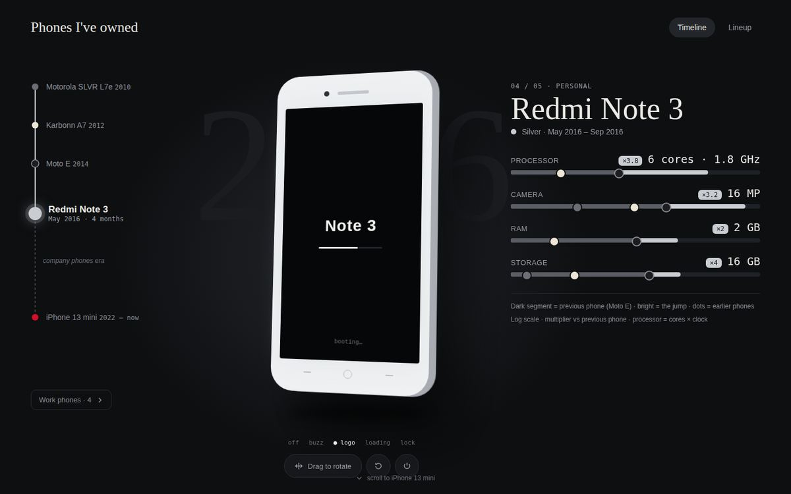
1. Scroll timeline with a boot-screen animation.
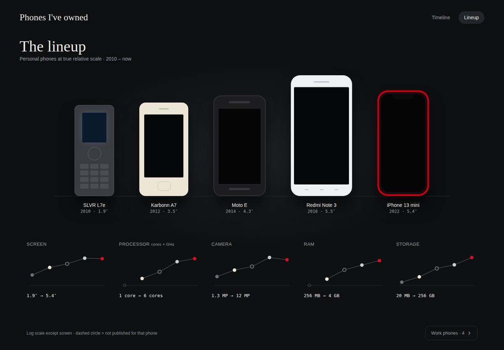
2. The lineup at true scale, with spec trends.
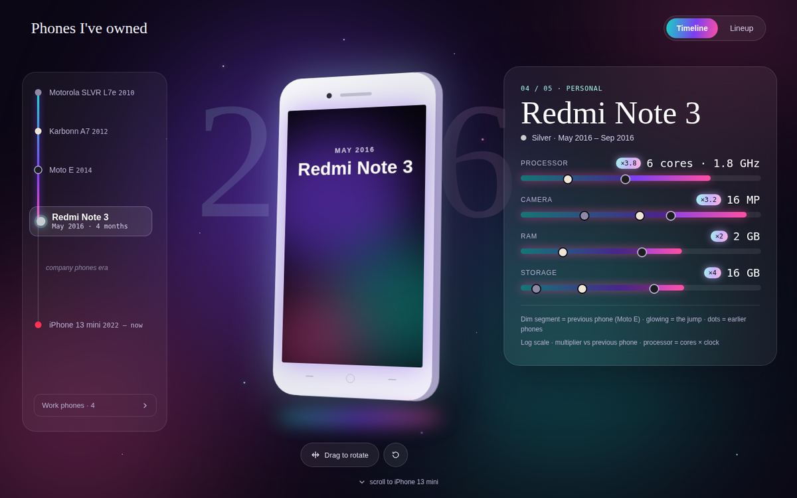
3. Holographic. Too much. Dropped.
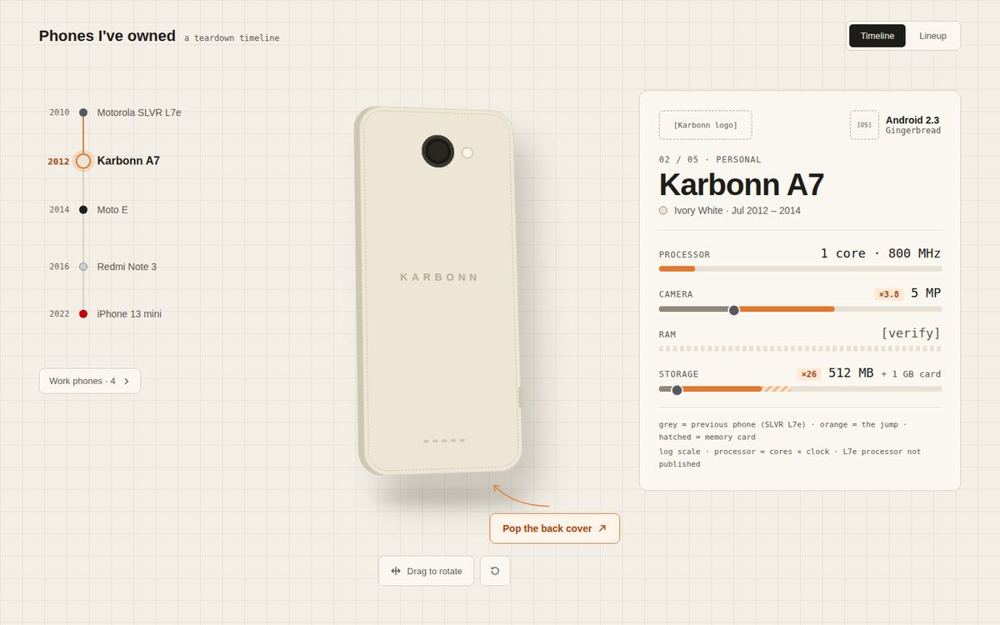
4. Workbench: pop the back cover and look inside.
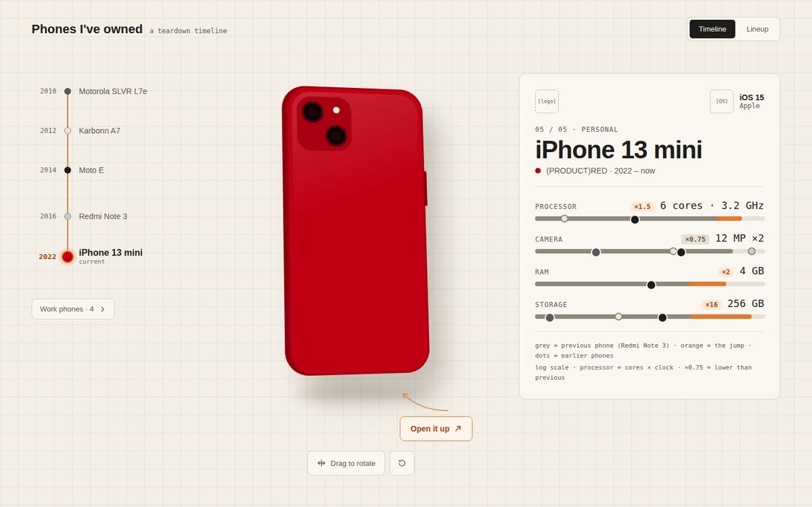
5. Same workbench, iPhone 13 mini.
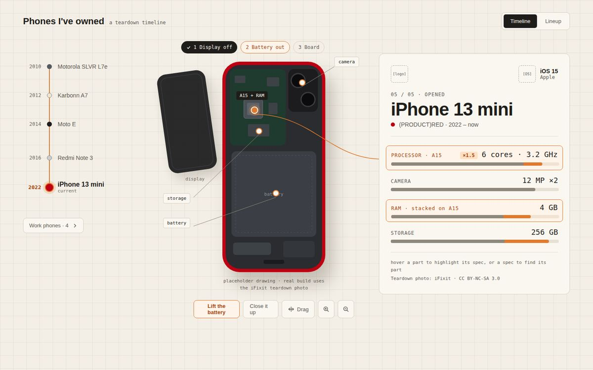
6. Teardown: dots on the parts link to the specs.
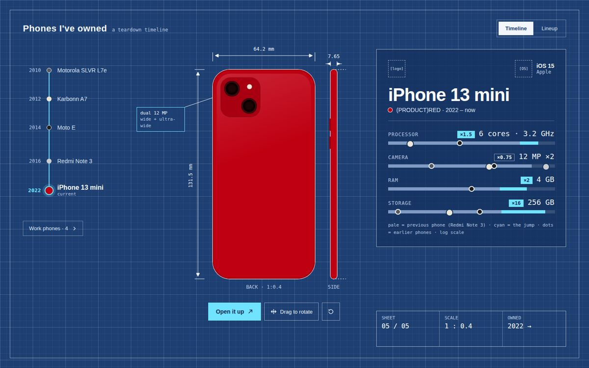
7. Blueprint theme.
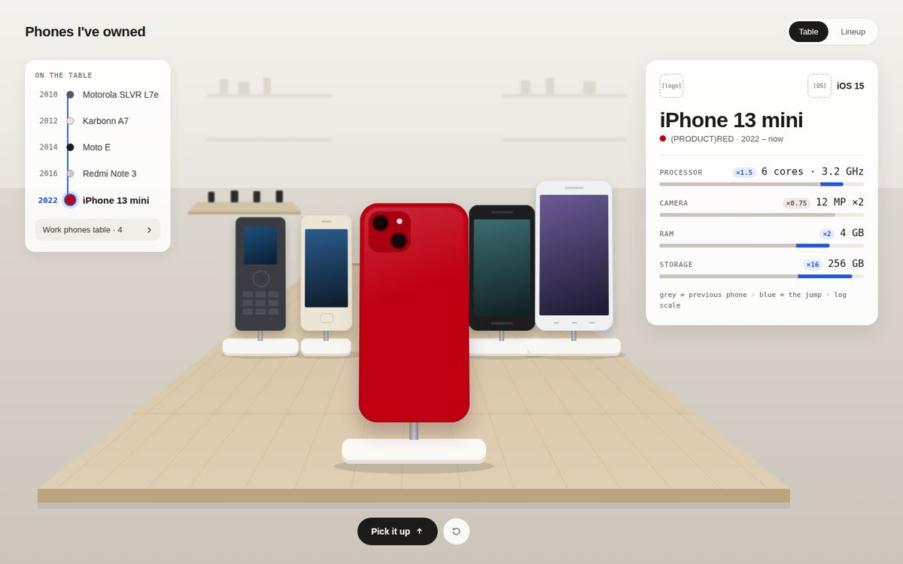
8. Electronics store table.
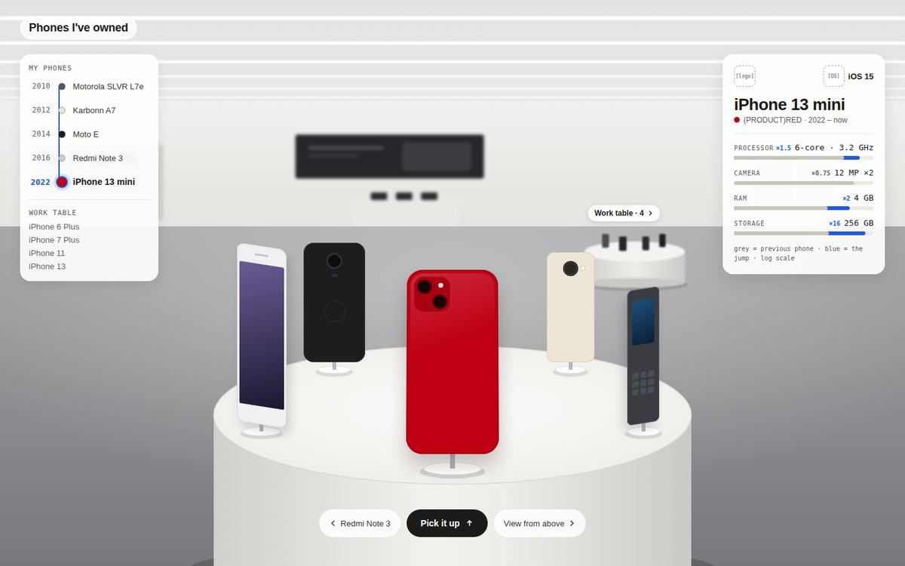
9. The one Rahul picked: a round table. The camera circles to the next phone. Work phones get their own small table.
What got cut along the way:
Boot screens. The real ones couldn't be found, and fake ones felt wrong.
The holographic look.
The big faded year behind the phone.
The dotted "company phones era" line.
What stayed: the year on the left of the list, neutral specs (numbers, no sentences), full 360° rotation, and the look inside.
Building it
Vite, Three.js and GSAP. The first build had only two phones, to check the idea.
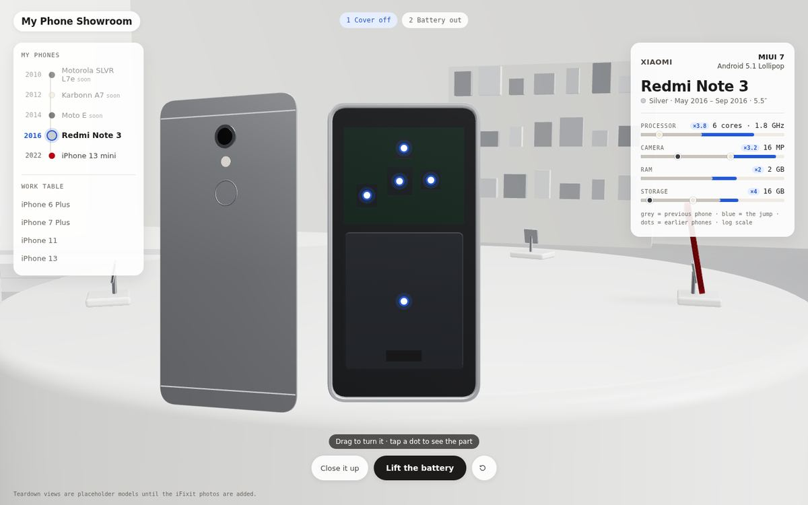
First build. Grey room, shelves on the walls, placeholder insides.
Then a round of fixes:
Flicker when moving between phones. The floor and the room box were fighting for the same pixels. Split them apart.
Looked like toys. Swapped the room for a wooden floor and walls, and marble white tables.
Pink iPhone. The (PRODUCT)RED back came out pink, then brownish from the wood reflections. Phones now reflect a neutral studio light instead of the room.
Specs hard to read. Now each spec shows the previous phone and this one as two bars, with a ▲ or ▼ jump.
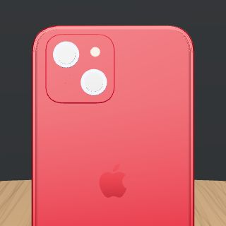
The pink iPhone.
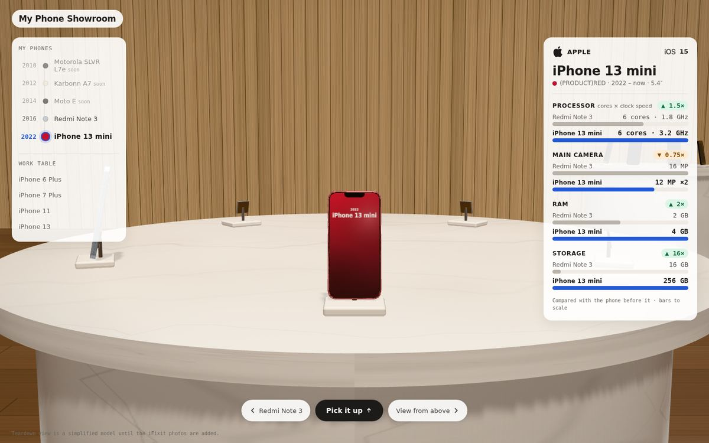
Wood and marble.
Looking inside
The insides are 3D parts built in code. Rahul used iFixit teardown photos as the reference for where things sit: board, shields, chip, flex cables, camera, battery. Open a phone and dots on the parts link to the spec panel. The battery lifts out.
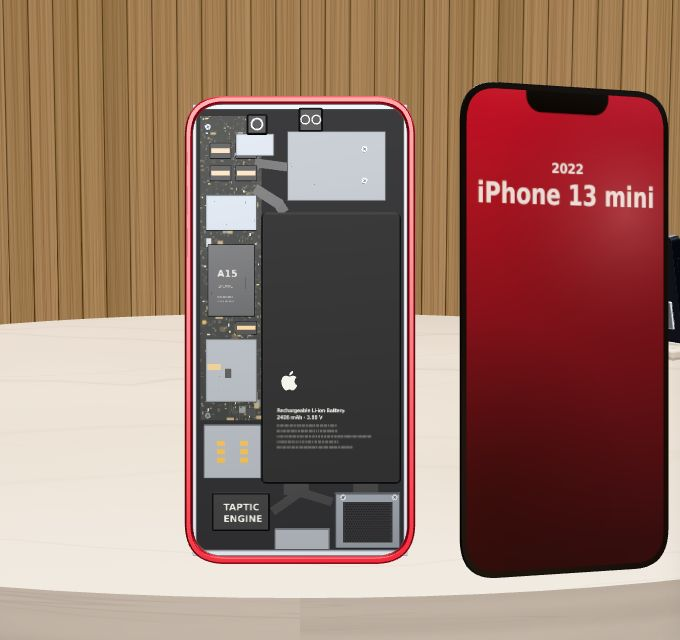
iPhone 13 mini, display off.
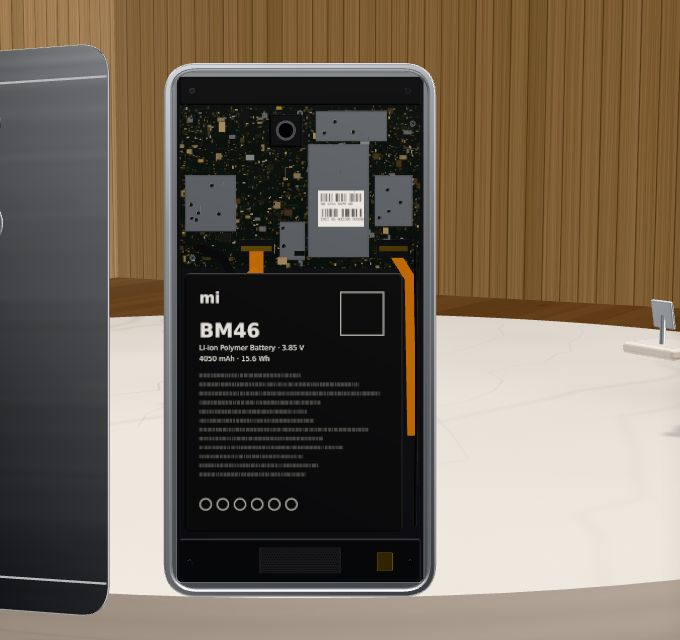
Redmi Note 3, back off.
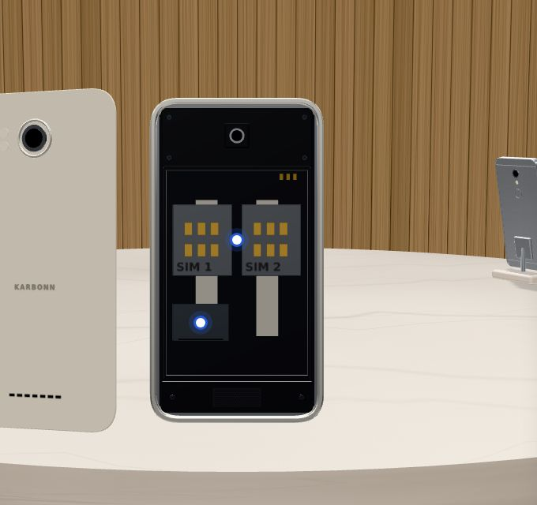
Karbonn A7, battery out. Two SIM slots.
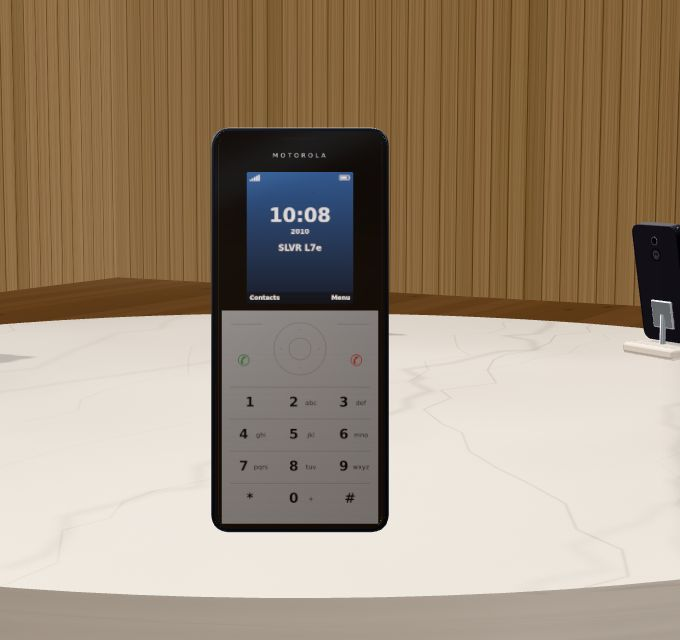
SLVR L7e, the flat metal keypad.
Small touches: the Karbonn and Moto E carry a "Custom ROMs" tag, because Rahul flashed both of them. And the view from above shows the whole table at once.
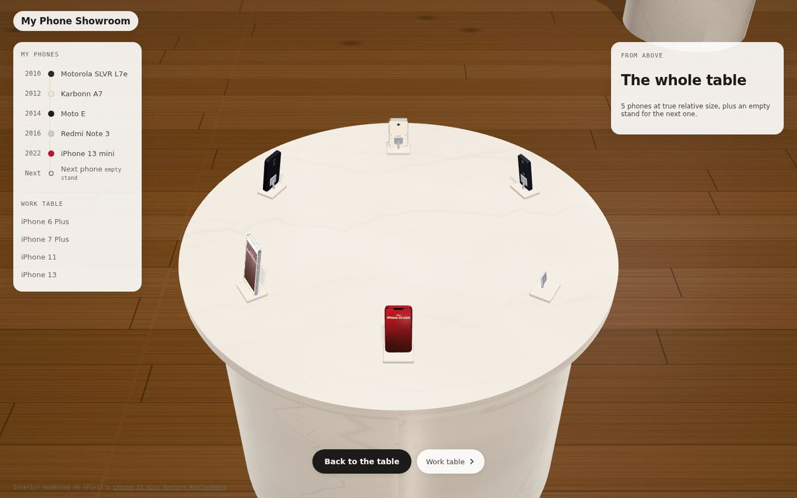
View from above.
Next
Make it more realistic.
Redo the spec sheet. Rahul isn't happy with how it looks yet.
Fill the empty stand. Rahul needs to buy a new phone soon.
This note was generated in a Claude session (Opus 5.5).